Camera verified sessions
The phone is propped up and the front camera keeps a loose eye on you: are you there, and are you mostly still. Verified sessions grow the streak and Otto's glow and open held apps. Unverified ones are kept in history.
Every screen is rendered from the app on an iPhone 17 Pro simulator, using the real valley, Otto, pills and buttons. Two things are stand-ins: the simulator has no camera, so the feed is a drawn room, and the phone icon on the camera card is a placeholder for a drawing in the style of Melvin's icon sheet.
1. How are we meditating?
Two sections. Verified carries a teal "Recommended" tag and the two big cards, with camera chosen by default (the gold outline, as today). Unverified sits underneath in the smaller pills, so the eye lands on the verified pair first.
The difference is said once, as what each section does: "Otto knows you showed up, so these grow your streak and his glow, and open your apps" over Verified, and "Kept in your history, just for you" over Unverified. Nothing says what an unverified session doesn't do. The reader works it out from the sentence above.
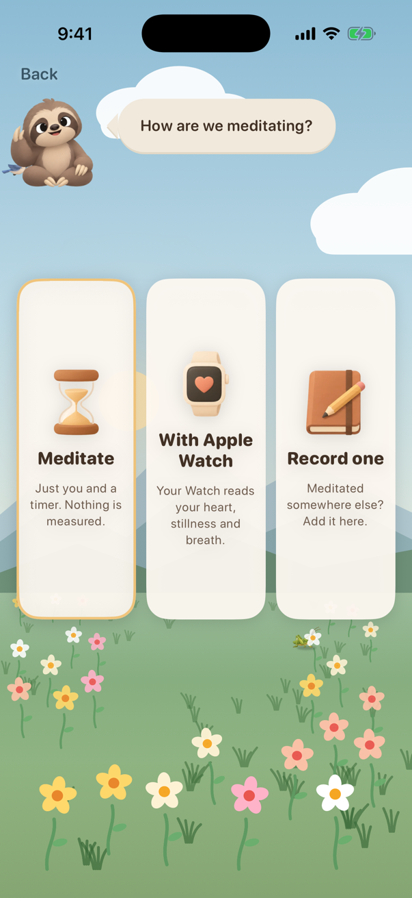
Three equal cards.
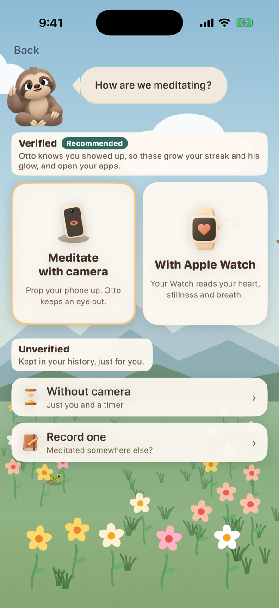
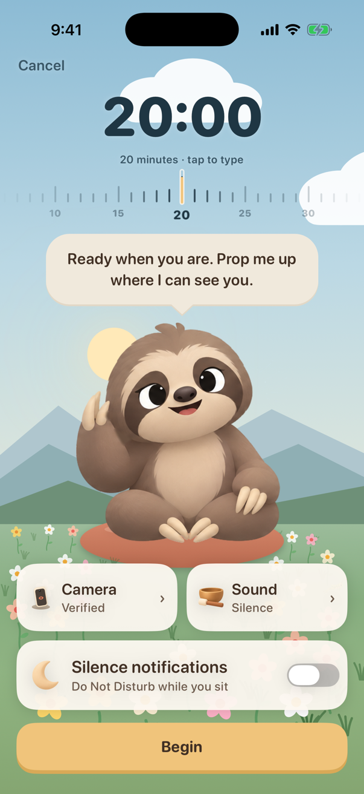
2. Setting up the camera
The permission is asked the first time camera is picked, never at launch. Before Apple's alert there is one screen that says what the camera is for, with a single Continue button: Apple's guidance says a screen shown before the system alert may only offer Continue or Next, with no cancel and no "Allow". If the camera is refused, the alternatives come straight up (App Review 5.1.1(iv)).
The start is hands-free. Once the phone is propped up an arm's length away, nobody can reach Begin. So Begin is tapped while holding the phone, and the camera does the rest. When Otto has seen you for two seconds, he says "I can see you" and a five second count starts with a soft tick each second, then hands over to today's "Get comfortable" moment. The check is loose on purpose: corner marks and no outline of a seated body. Sitting, leaning back with legs out or standing all pass.
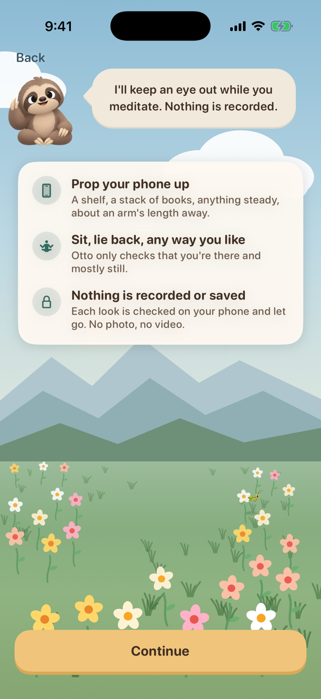
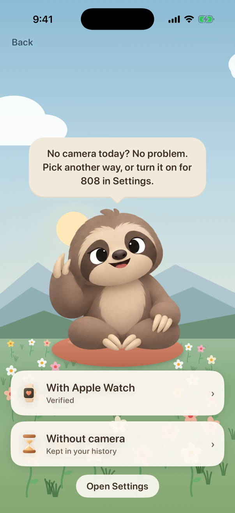
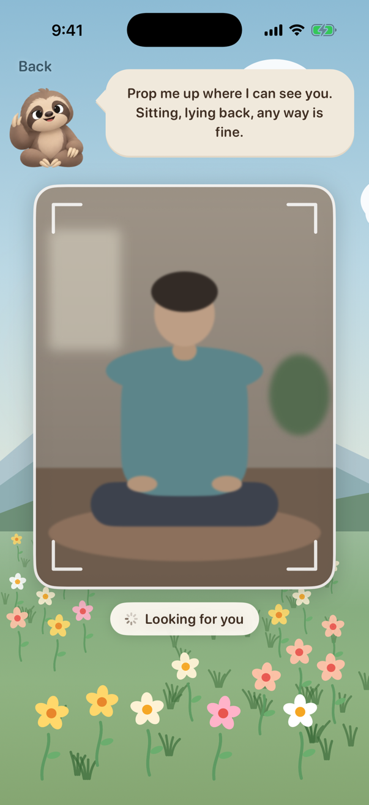
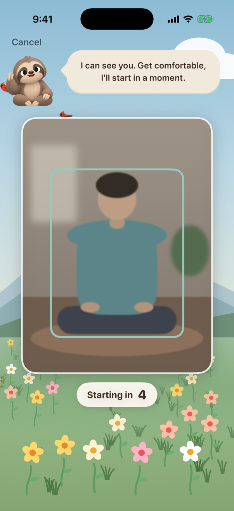
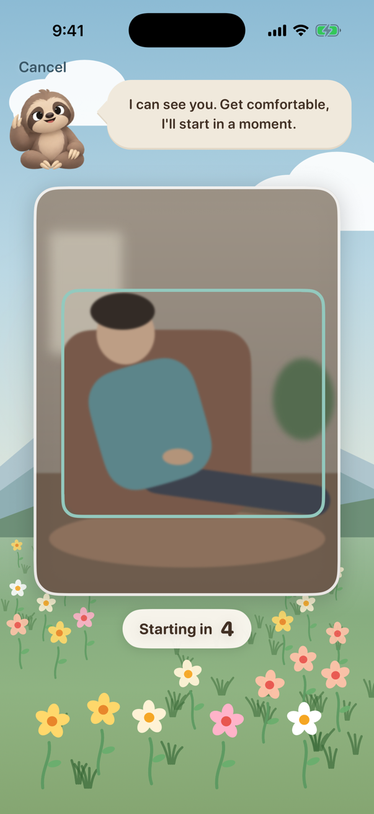
3. During the session
No live preview. A picture of yourself is the opposite of a quiet screen, and the stance is still evidence after, never during. What stays is one small line under the island, "Otto can see you", for the whole session. That line is not decoration: App Review 2.5.14 asks for "a clear visual and/or audible indication" whenever an app logs what a person is doing, so it never fades away.
In a dark room the screen becomes a lamp. Normally the sit dims itself to a fifth (SitDimmer). When the camera can't see well enough, the valley gives way to warm white at full brightness, with the clock and Otto in brown ink, and goes back to the valley once there's enough light. Be clear about what this buys: by a rough estimate a phone screen adds about 10 lux to a face at one metre and about 38 lux at half a metre (a dim room is under 10). So the lamp really helps only up close, which is why the dark screen asks to bring the phone nearer.
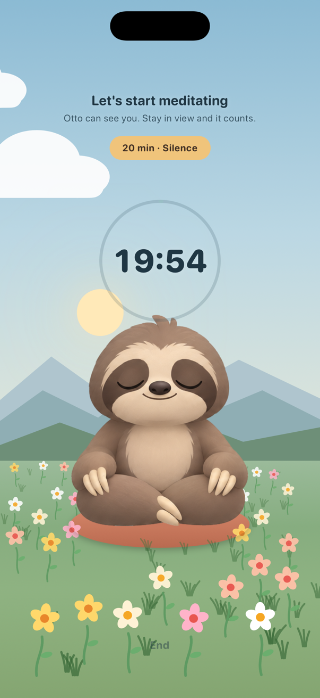
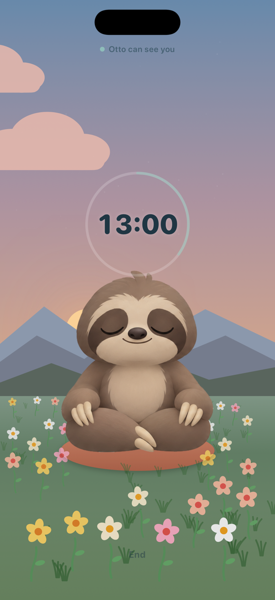
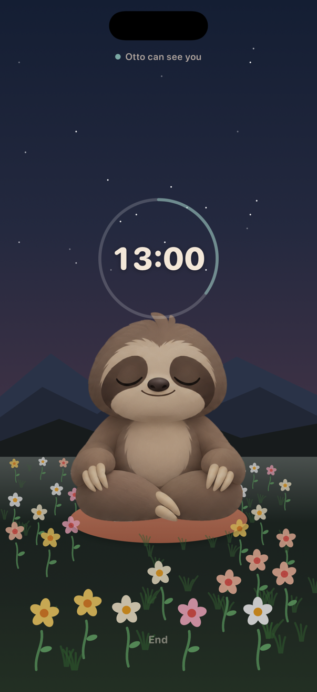
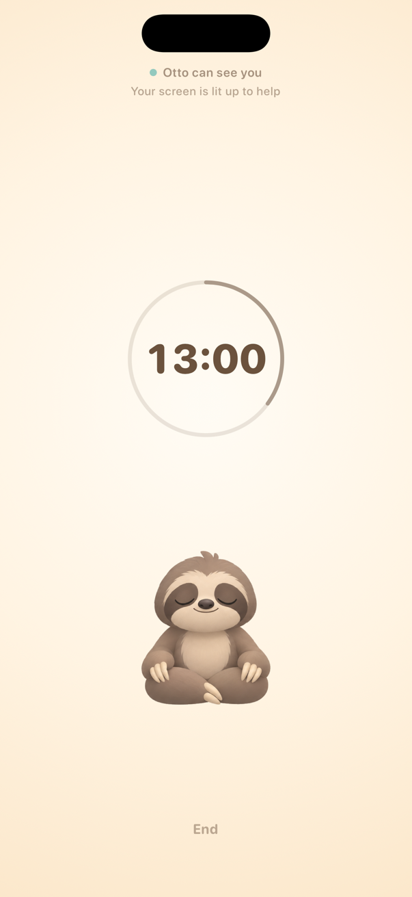
4. The warning, and the minutes that don't count
Eyes are closed, so the warning is a sound first. Two soft wooden knocks, clearly not the singing bowl that ends a session. They play on the media channel the way SessionBell does, so the ring switch doesn't silence them and anything else playing keeps playing. If the person is still away after 20 seconds, the knock plays once more and then stays quiet: nagging a person who has gone to answer the door helps nobody. When they're back and settled, one soft tone. Otto's bubble says the same thing in words for anyone who opens their eyes.
The minutes Otto couldn't count show as a dotted stretch in the ring. The clock keeps real time, and no number about it appears until the end.
| Recommended timeline | What happens |
|---|---|
| Out of view or moving a lot, under 10 s | Nothing. Scratching a nose or shifting legs is part of sitting. |
| 10 s out of view, or 15 s of big movement | Knock, knock, and Otto's bubble. |
| Back and settled within 20 s of the knock | Nothing is lost. |
| Still away after that | Uncounted from when it started until settled again. One more knock, then quiet. |
| First 60 s and last 10 s | Exempt: sitting down and getting up are big movements by nature. |
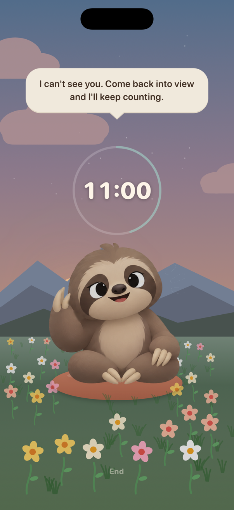
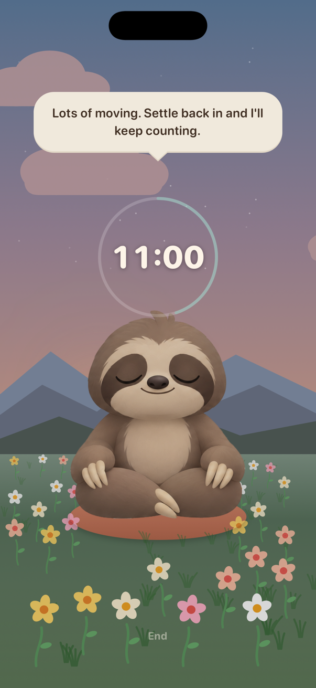
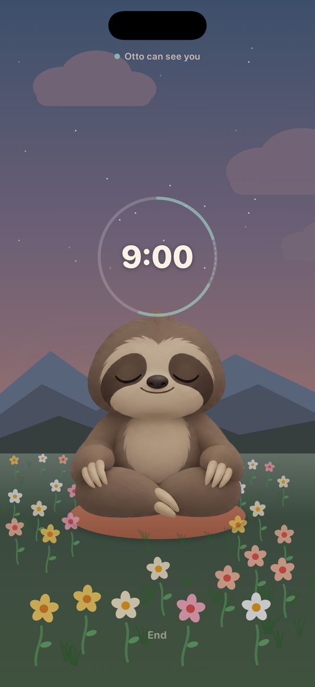
5. Too dark to see
Checked before the session starts, during the framing step. The screen has already turned itself into a lamp. Otto asks for a little help in his own words and keeps looking, so turning on a light is enough and nothing needs tapping. If it gets dark in the middle of a session, the lamp comes on first; only if Otto still can't see does the normal "I can't see you" knock follow.
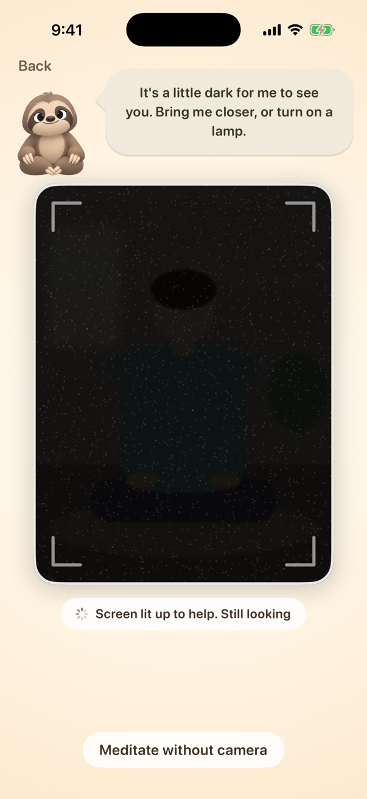
6. The end
A verified session with a gap reads "17 of 20 minutes counted" under "Session complete!", and the tiles, points and glow all use the 17. An unverified session gets a lighter ending: the minutes, "saved to your history", and one line from Otto inviting the camera next time, with no streak, points or glow bar (see To decide).
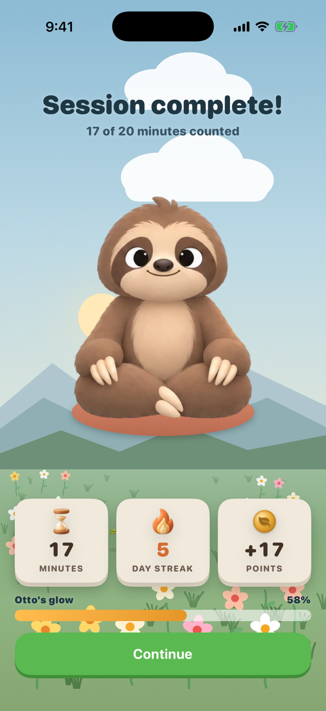
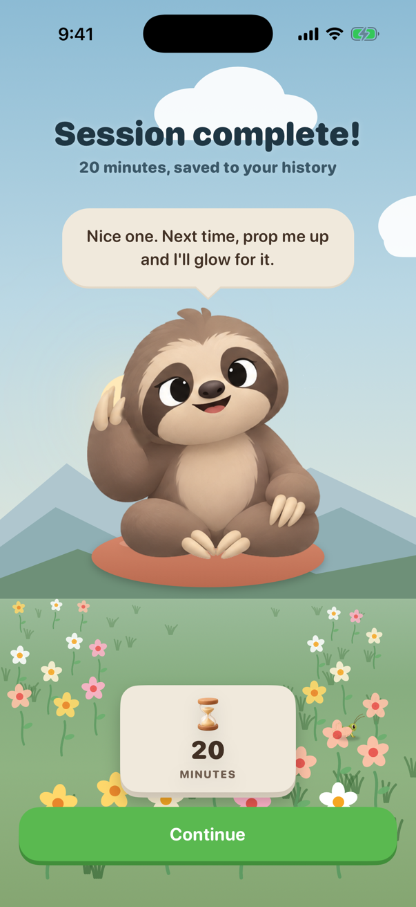
How it watches, as cheaply as possible
Video frames, not photos
A low-resolution video feed, never repeated photo captures. Apple lets apps silence the photo shutter "except in jurisdictions" that require it, so a photo every few seconds would click in Japan and Korea. Photos also refocus and re-expose each time. Video frames from the data output make no sound (unverified: Apple documents the shutter only for photo output).
The ladder
Resting: the lowest frame rate the front camera format allows, aiming for 1 to 2 fps. Apple documents no minimum, and a format refuses a rate outside its videoSupportedFrameRateRanges. So read the range at runtime and drop extra frames in the delegate if 1 fps isn't offered. Each frame gets a tiny luma-grid difference for stillness (the camera-vision branch already does this). Every 3 seconds, one VNDetectHumanRectanglesRequest with upperBodyOnly = false. It defaults to true, and full body (revision 2, iOS 15) is what covers lying back, legs out and standing.
Something looks off (box lost, motion jumps): go to about 5 fps for 10 seconds to confirm before knocking, then back down. Under heat, follow Apple's advice for capture pressure and lower the rate.
Not used: body pose, because Apple says it wants the person at least a third of the frame height and fails bent over or near the edges. Person segmentation, because it costs more memory and time. Tracking between detections, because it is built for consecutive frames and seconds apart it would drift (unverified: nobody publishes relative costs, so measure all of these with signposts).
Dark rooms
The low frame rate is also what makes long exposures possible: exposure can't be longer than a frame, and a 1 fps frame lasts up to a second. Set custom exposure and ISO up to the format's maxExposureDuration and maxISO, read on the device. Forum reports put continuous auto exposure near 1/30 s and custom exposures near 1 s (unverified). Apple's low-light boost has no published device list and may not exist on the front camera (unverified), so it is a bonus, not the plan. Retina Flash fires only for still photos and has no video API, so the "lamp" is simply full screen brightness and warm white pixels. Brightness set by an app lasts until the phone is locked, so it must be put back, which SitDimmer already does.
Measuring the battery cost
No estimate here, on purpose: it has to be measured on a phone. Three 20-minute sessions on the same phone at the same brightness, repeated three times in alternating order, in airplane mode, from the same battery level:
- Without camera (today's timer, dimmed to a fifth).
- Camera at 1 to 2 fps, valley dimmed.
- Camera in lamp mode at full brightness.
Record each with Xcode 26's Power Profiler on the device itself (Developer settings, Performance Trace: no cable needed, CPU, GPU, display and network impact). Cross-check with Xcode's Energy Impact gauge while connected, which breaks out Camera and Display, plus battery percentage before and after and ProcessInfo.thermalState. MetricKit has no camera metric. Apple's own energy talks say the display can be the biggest drain, so expect run 3 to cost the most. That is why the lamp only comes on when it's needed.
Privacy
Each frame becomes a few numbers and is released. Nothing is stored and nothing leaves the phone. Apple's App Privacy rules say data processed only on the device isn't "collected", so the labels and the privacy manifest don't change. The privacy policy needs one paragraph (both copies), and the camera usage string must describe this use alongside the selfie and Otto's video call, for example: "808 uses the front camera during a session to check that you're there and still. Nothing is recorded or saved, and nothing leaves your phone."
App Review
The real risk is 5.1.2(i). An app "may not require users to enable system functionalities" in order to access functionality. 808 has no free tier, so every feature is paid. Tying the streak, the glow and held apps to the camera is the kind of gate a reviewer could read that way. What softens it:
- The Apple Watch is a second verified way, with no camera at all.
- Block's "Not now" still opens apps for 5, 10 or 30 minutes whatever kind of session was done, so no app is ever locked behind the camera.
- Unverified sessions still run and are kept in history.
- The camera is the feature itself, a watched session, rather than a gate in front of something unrelated.
- Prior art: Push2Unlock counts push-ups on camera to unlock blocked apps and is on the App Store (unverified: going by its listing only).
Recommended: say this plainly in the review notes. Keep a fallback ready (see To decide, item 7).
5.1.1(iv): "provide alternative solutions for users who don't grant consent". That is the camera-refused screen. 2.5.14: a visible indication while logging. That is the cue that never leaves the screen. 5.1.1(ii): the usage string must clearly and completely describe the use.
To decide
Decided (Melvin, 2026-10-08): existing history keeps counting exactly as it always did. Streak, glow and apps all stay the same, so nobody's streak or glow drops on update. The Unverified rules apply only to sessions from the version that ships this.
How to build it: mark each new session with how it was verified (camera, watch or none), and treat a session with no mark as from before, which counts. Use the mark, not a cut-off date: "Record one" can log a session dated last week after the update, and that one must still be unverified. It is a new synced field, so the CloudKit schema needs promoting before release.
- Do unverified sessions earn points, awards or "time meditated"? Recommended: no, one rule, "unverified is history only". Points buy hats and run on the same minutes as the glow. Awards are rewards. If Home's time and session totals counted them while the streak didn't, the numbers on one screen would disagree. History lists every session with no badge.
- Counted minutes or total minutes? Recommended: counted, everywhere a minute matters. That covers Block's "meditate first" length, the glow's minutes per day, points, and the one-minute floor for the streak. Otherwise four minutes of washing up inside a five-minute session would open the apps.
- Warning thresholds. Starting values as in the table: knock at 10 s out of view or 15 s of big movement, 20 s of grace, one repeat, the first minute and last 10 seconds exempt. "Big movement" should be relative to each session's own settled level, because camera motion varies with distance. The
camera-visionbranch measured x4 the median as the gate that separates real settling. Tune on a dozen real sits before shipping. - Apple Watch sessions that fall back to the phone. Recommended: a Watch session is verified for the minutes the Watch actually sensed a heart rate. A Watch taken off loses its heart rate, the same as stepping out of frame. If the Watch never confirms and the session becomes a phone session, Otto offers the camera on the spot ("Your Watch didn't answer. Prop me up and I'll count it."). Otherwise it is unverified.
- Default for Watch owners. Camera is the default. For someone whose Watch is connected, should the Watch be the default instead, since it also reads heart and breath? Recommended: yes.
- Timed sessions with uncounted minutes. Should they run longer to make the time up? Recommended: no. A session ends when it was set to, and the end says "17 of 20 minutes counted".
- No Watch and no camera permission means everything is unverified. If App Review objects under 5.1.2(i), the fallback is to let unverified sessions keep the streak but not the glow, points or apps. Recommended: ship the strict rule with a clear review note, and keep this fallback ready.
- "Record one" changes meaning. Today a recorded session counts for the streak and glow. From this version it won't, which is Melvin's rule, but it is a visible change for anyone who logs sessions elsewhere. A line in What's New would cover it.
- The word "Unverified". Keep it, or soften the section title to "Just for you", which matches its line? Recommended: try "Just for you". "Unverified" names what the session lacks, and the house copy rule avoids that.
- Hands-free start. Start the count automatically once Otto sees you (recommended), or wait for a tap? A tap means leaning back over to the phone after propping it up.
- Lamp mode. Automatic when it's too dark (recommended), and only then. Or a switch? It is the most expensive state for the battery.
- Volume. The knock follows media volume, so at zero nobody hears it. Recommended: if media volume is zero at Begin, Otto says "Turn your volume up a little so you can hear me if I lose you."
- A camera score? The
camera-visionbranch can read stillness and slow breathing well enough for a score (stillness .80, breath .20). Recommended: not in this version. Verification only needs "there and still", and adding a score brings back the open questions about breathing accuracy. - Art. A drawing for the camera kind in Melvin's icon sheet style, such as a phone leaning on a stone. The one here is a placeholder.
Sources
- App Review Guidelines, 2.5.14, 5.1.1(ii), 5.1.1(iv), 5.1.2(i): developer.apple.com/app-store/review/guidelines
- HIG, requesting permission (one Continue button, no cancel): developer.apple.com/design/human-interface-guidelines/privacy
- App Privacy details (on-device processing is not "collected"): developer.apple.com/app-store/app-privacy-details
upperBodyOnly(iOS 15, default true): developer.apple.com/documentation/vision/vndetecthumanrectanglesrequest/upperbodyonly, and full body in revision 2: WWDC21 10040- Body pose limits: Detecting human body poses in images, WWDC20 10653
- Tracking: VNTrackingRequest
- Exposure: setExposureModeCustom, activeMaxExposureDuration, activeVideoMaxFrameDuration, isAutoVideoFrameRateEnabled; forum reports on durations (unverified): thread 751112, thread 736856
- Low-light boost: automaticallyEnablesLowLightBoostWhenAvailable
- Retina Flash is photo only: developer forums 21694
- Screen brightness persists until lock: UIScreen.brightness. Panel brightness: iPhone tech specs. Room light levels: Gooley et al. 2011. The lux figures above are back-of-envelope arithmetic, not measurements.
- Shutter sound: isShutterSoundSuppressionSupported. Camera in the background: videoDeviceNotAvailableInBackground
- Energy: Analyzing your app's battery use, WWDC25 226 (Power Profiler), WWDC22 10083 (display), capture system pressure, MetricKit
- Prior art (unverified, listings only): Push2Unlock; sit-still, an open-source web meditation timer that watches for leaving the frame
- 808's own measurements: branch
camera-vision,CAMERA_VISION_PLAN.md(the x4 motion gate, stillness normalised per session)